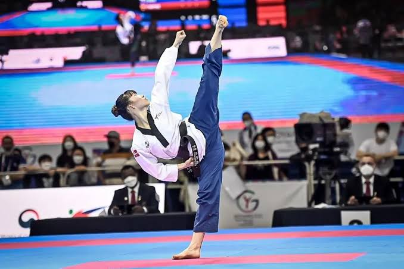

TAEKWONDO EVENTS
Poomsae Competition

A showcase of Taekwondo patterns
where athletes perform precise sequences
of movements to demonstrate technique,
balance, and discipline.
Sparring (Kyorugi) Tournament
An intense match where two fighters
face off using controlled kicks, punches,
and defensive skills, aiming to score points
while showing sportsmanship.
Board Breaking Challenge
A test of power, accuracy, and confidence
as athletes break wooden boards using kicks,
punches, and strikes.
Taekwondo Demonstration Show
A performance featuring synchronized techniques,
high-flying kicks, and choreographed routines to
inspire and entertain the audience.
Self-Defense Workshop
An event teaching practical Taekwondo-based
techniques for personal safety, open to
both students and the public.
Belt Promotion Test
An evaluation where practitioners demonstrate
their skills to earn a higher rank, symbolizing
growth in ability and knowledge.
Taekwondo Friendship Games
A friendly gathering of different dojangs
(schools) for fun matches, team-building activities,
and cultural exchange.
High Kick Challenge
A fun competition to see who can execute
the highest and most powerful kick with proper
Taekwondo form.